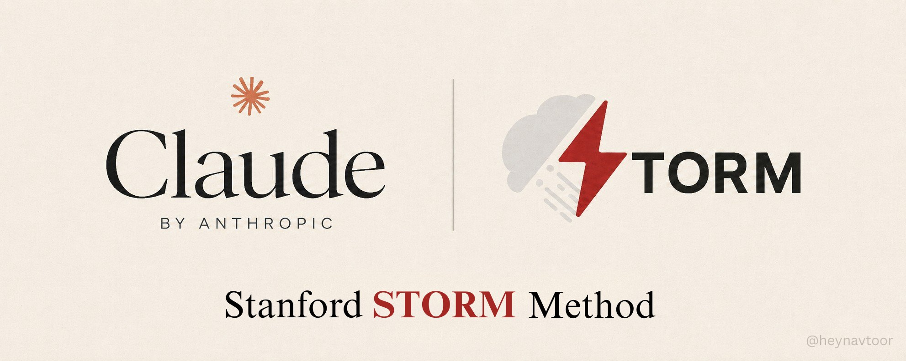
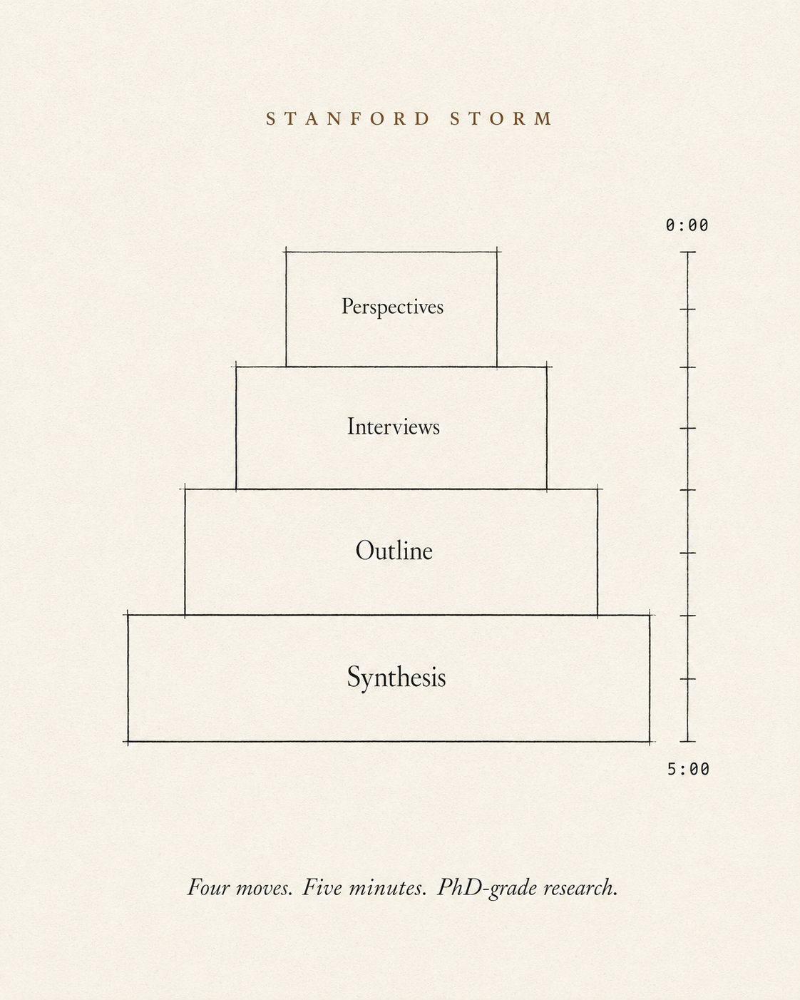
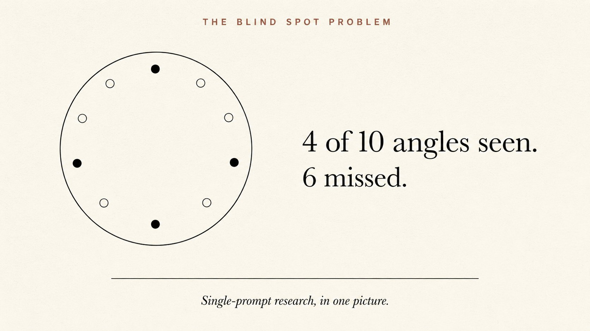
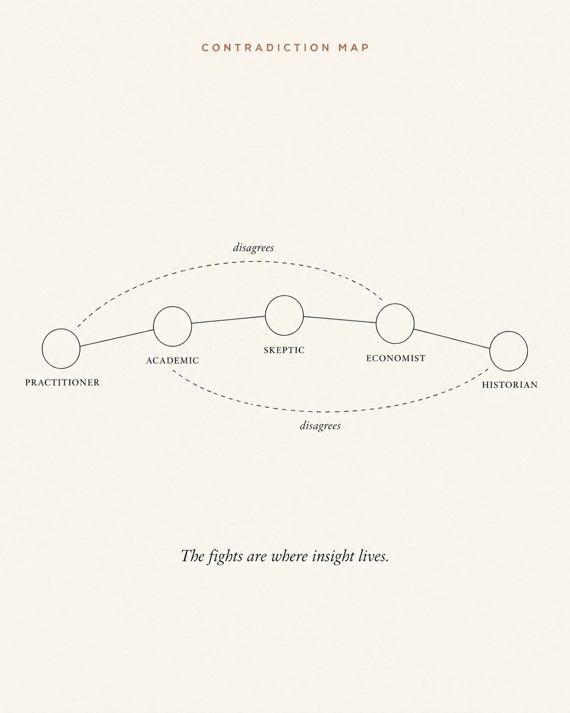
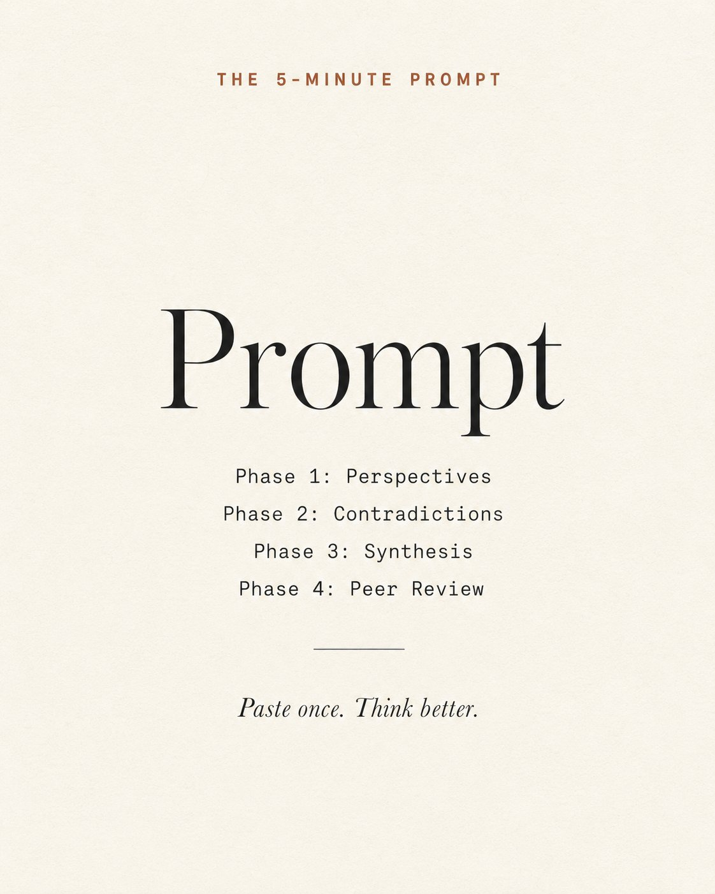
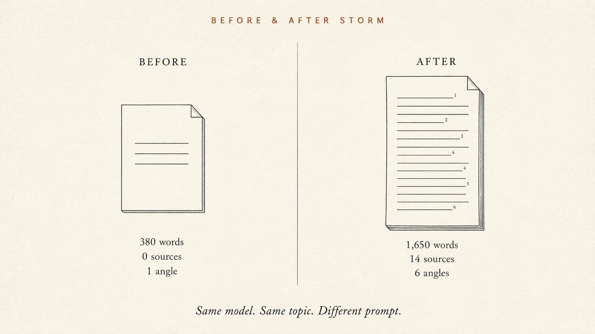
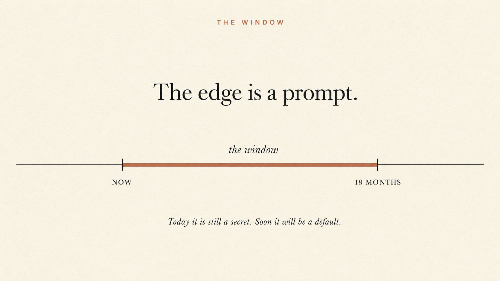

Stanford STORM Method
让 Claude 5 分钟做出博士级研究 · 4 个 prompt 全拆解
Stanford NAACL 2024 论文背后的方法论——4 个 prompt 串成 8 阶段 pipeline：Multi-Perspective Scan / Contradiction Map / Synthesis / Peer Review，附 7 个真实使用场景。每张 prompt 卡片支持中英文切换 + 一键复制。

Nav Toor · The Stanford STORM Method: How to Make Claude Research Like a PhD in Minutes · 2026/06/17
大多数人用 Claude 像用搜索引擎：问一句，答一句，关 tab。这是把最好的功能锁起来了。
Stanford 2024 年在 NAACL 发了一篇论文，做了一个叫 STORM 的研究系统——比下一个最佳方法组织度提升 25%、覆盖面广 10%。MIT 开源，免费跑，但几乎没人知道：你可以在 Claude 里用 4 个 prompt 复刻它。
本文按 8 个章节展开：先讲清楚 STORM 是什么（cap 01）、为什么单 prompt 永远不够（cap 02）、然后逐个拆解 4 个核心 prompt——Multi-Perspective Scan / Contradiction Map / Synthesis / Peer Review（cap 03-06），再串成 5 分钟工作流（cap 07），最后给 7 个真实使用场景（cap 08）。每张 prompt 卡片可中英切换 + 一键复制。
What STORM actually is
大多数人用 Claude 像用搜索引擎：问一句，答一句，关 tab。这是把最好的功能锁起来了。
Stanford 2024 年在 NAACL 发了一篇论文，做了一个叫 STORM 的研究系统。论文经过同行评审，结论很硬：
- STORM = Synthesis of Topic Outlines through Retrieval and Multi-perspective Question Asking
- 发布：NAACL 2024 · Stanford OVAL Lab
- 效果：相比下一个最佳方法，产出的文章 组织度提升 25%，覆盖面 广 10%
- 许可：MIT 开源，免费用，免费跑
Stanford 还做了一个在线 demo：storm.genie.stanford.edu。不用注册，输个主题直接看它写一篇带来源的文章。
完整代码在 github.com/stanford-oval/storm。本地能跑。
但真正值钱的部分不是代码。Stanford 这套系统的核心是一种思维方式——而你完全可以在 Claude 里复刻它，方法就是接下来要讲的 4 个 prompt。

Why one prompt always fails
你问 Claude「告诉我 X 是什么」，它给你的是主流观点。最常见的框架。最表面的东西。
你得不到的是：
- 实战派 —— 每天跟 X 打交道的人知道什么？学术圈忽略什么？
- 怀疑派 —— 主流观点哪里错了？支持者故意忽略了什么证据？
- 经济派 —— 谁从当前叙事里获利？什么财务激励在塑造研究？
- 历史派 —— 以前见过类似的模式吗？最后怎么发展的？
- 学院派 —— 同行评审的证据到底说了什么？哪里跟大众认知矛盾？
这 5 个声音看到的是不同的东西。这正是 PhD 学生做的事——他们不是问一个问题，他们问 5 个。
一个 PhD 级的研究任务需要人类花 40-60 小时阅读。多数人没这个时间。STORM 把它压缩了。下面 4 个 prompt 把它进一步压缩——总共 5 分钟。
Prompt 1 · Multi-Perspective Scan
这是整套方法的核心。粘贴到 Claude，把第一行的 topic 换成你的研究主题。

你会得到什么：同一个主题的 5 种完全不同的解读。实战派看到学院派漏掉的东西。怀疑派挑战实战派的假设。经济派暴露学院派忽略的激励机制。历史派提供经济派看不到的模式。
这是 60 秒 的工作量，但它能捕捉到单 prompt 永远找不到的东西。
Prompt 2 · Contradiction Map
现在让 Claude 找出这 5 个声音在哪里打架。交锋的地方才有真正的理解。

你会得到什么：一张专家分歧地图——分歧在哪里、为什么分歧、哪个证据最强。多数人跳过这一步。但这一步正是从「表面理解」到「真本事」的分水岭。
Prompt 3 · Synthesis
现在让 Claude 把前面所有东西整合成一份研究简报。

你会得到什么：一份任何单一专家都写不出来的简报。它涵盖了每个角度，标出了矛盾点，给可信度排了序，最后落到一个具体行动上。这本来是一个 PhD 学生 48 小时能产出的东西。你 90 秒拿到了。
Prompt 4 · Peer Review
STORM 有一个已知的弱点——Stanford 自己的研究者公开标出来了：它不自查。来源偏差、事实错位会偷偷混进来。
这个 prompt 修这个 bug：让 Claude 给自己打分。

你会得到什么：一份对你自己研究的诚实评估——哪些论断强、哪些弱、有哪些偏差、缺哪些角度。真正的同行评审要几个月。你 60 秒做完了。
The 5-minute workflow
把 4 个 prompt 串成一个工作流，每个 prompt 一分钟：
- 第 1 分钟 — Prompt 1：5 个专家视图。
- 第 2-3 分钟 — Prompt 2：矛盾图谱。
- 第 3-4 分钟 — Prompt 3：研究简报。
- 第 5 分钟 — Prompt 4：可信度评分。
总耗时：5 分钟。
输出：一份带矛盾分析、综合、具体行动、可靠性评分的多视角简报。
PhD 学生人工产出这个要 40-60 小时。不是因为他们慢，而是因为从 5 个角度读、画出矛盾、综合、自查——这本来就是一个大脑要 40 小时才能完成的活。
7 ways to use this starting today
这 4 个 prompt 不是写文章专用——任何需要先想清楚再行动的事都能用：
- 写文章或报告之前 — 跑一遍 4 prompt，你的文章能覆盖别人没想到的角度。
- 重大商业决策之前 — 拿 5 个视角。实战派告诉你现实里什么有效，怀疑派告诉你哪里会出错，经济派告诉你谁获利。
- 面试之前 — 5 分钟从 5 个角度研究目标公司。实战派视角给你 insider 行话，怀疑派视角给你犀利问题。你走进面试间比任何人都准备得充分。
- 投资之前 — 看多情形、看空情形、历史类比、激励图谱、学术证据——5 分钟。矛盾图谱告诉你真正的风险藏在哪里。
- 学新技能之前 — 从 5 个角度摸这个领域。实战派告诉你先学什么，学院派告诉你理论是什么，怀疑派告诉你哪里被过度炒作。你跳过噪音。
- 谈判之前 — 从 5 个角度研究对方。理解他们的激励、弱点、历史行为。你走进谈判间带着结构性优势。
- 任何演讲之前 — 对你的主题跑一遍 STORM。你的 slides 在观众提反对意见之前就回答了。你的 Q&A 看起来毫不费力。

SOURCES & CREDITS
引用与原文出处
-
ORIGINAL ARTICLE
The Stanford STORM Method: How to Make Claude Research Like a PhD in Minutes
作者：Nav Toor (@heynavtoor) · 发布于 2026/06/17 · 2.23M 浏览
原文链接：https://x.com/heynavtoor/status/2067194761446920264 - AUTHOR · X https://x.com/heynavtoor
- AUTHOR · LINKTREE https://linktr.ee/navtoor — Free Products + Sponsorships
-
STANFORD STORM · PAPER
Synthesis of Topic Outlines through Retrieval and Multi-perspective Question Asking · NAACL 2024
https://storm.genie.stanford.edu（在线 demo）
https://github.com/stanford-oval/storm（MIT 开源） - INTERPRETATION 本文为解读版本，按中文阅读习惯重排。原文中 4 个 prompt 模板均保留英文原貌；中文版为意译，便于理解。如需引用请以原文为准。
STORM 不是 prompt 越多越好，而是视角越多元越准。这套方法适用于任何需要"先想清楚再行动"的场景——写文前跑一遍，决策前跑一遍，面试前跑一遍。
You now have a PhD-level research method·four prompts, five minutes, eight phases.
读完了。下一步：打开 Claude，粘 Prompt 1，5 分钟后你对自己的研究主题会有一个完全不同的视角。